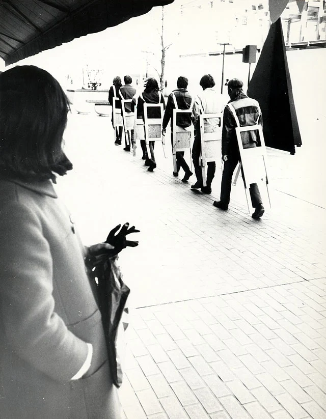
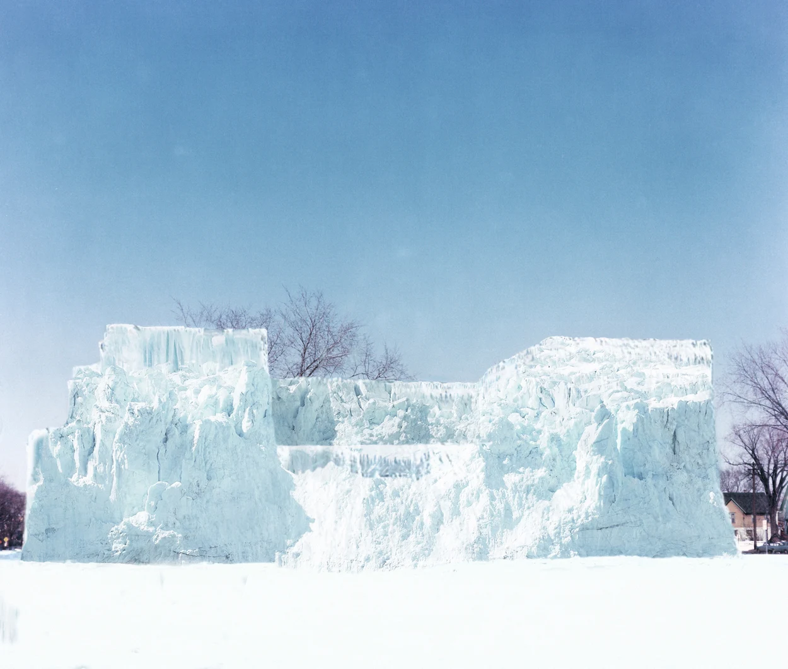
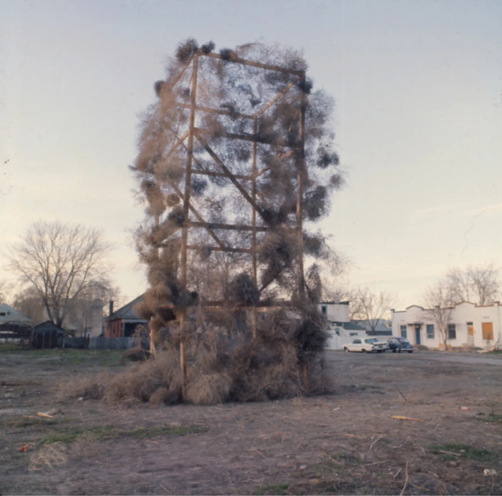
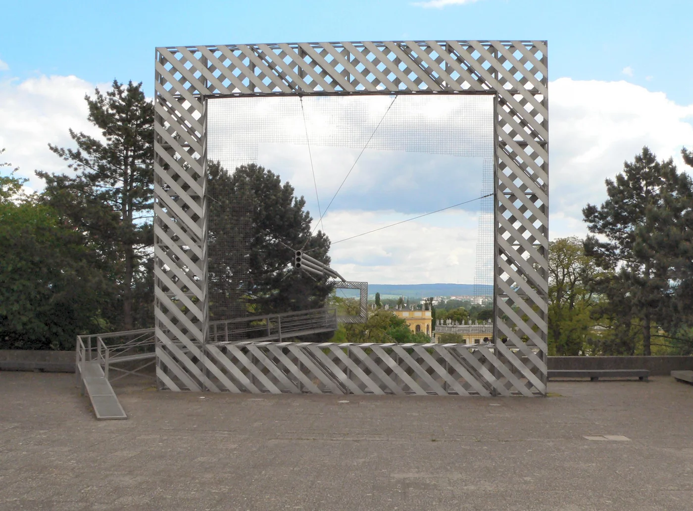

見るポイント
背負った四角い板は、広げると椅子になります。椅子を街へ持ち出すことで、歩く場所を座れる場所にも変えています。
作品・制作の例7件を紹介しています。実作品画像4点、参照・関連画像0点。画像の収集は継続中です。
歴史的な運動・建築と製品をめぐる批判的な実験
Radical Design
変わった椅子や、実際には建てない都市の絵。
ラディカル・デザインは、物をつくるだけでなく、暮らしの当たり前を問い直しました。
見た目の驚きの先に、どんな問いがあるでしょう。
実作品を見る

画像を表示できませんでした。下の出典ページで確認できます。
ジャンニ・ペッテナ / 1971
合板製の折り畳み椅子を使ったパフォーマンスの記録写真 ／ ポンピドゥー・センター（フランス国立造形芸術センター寄託）。カナダ建築センターにも制作資料を所蔵
背負った四角い板は、広げると椅子になります。椅子を街へ持ち出すことで、歩く場所を座れる場所にも変えています。
研究の蓄積がある作品。カナダ建築センターが制作資料を、ポンピドゥー・センターが椅子と関連資料を収蔵しています。
作品・掲載画像の著作者表示 Gianni Pettena / Wikimedia Commons（CC BY-SA 3.0）。WebPに変換・縮小。
出典で作品・資料を見る ↗CC BY-SA 3.0
作品の作者ジャンニ・ペッテナが、作品を写した掲載画像を自作として CC BY-SA 3.0 で公開。
Gianni Pettena / CC BY-SA 3.0。掲載元の原画像から WebP に変換・縮小。
再利用の際は Gianni Pettena の氏名、掲載元、CC BY-SA 3.0 の条件と変更の有無を表示してください。翻案した画像は同じ条件で配布してください。
作品・図版の関連資料 ↗画像の利用条件 ↗画面表示用に大きさを調整しています。
実作品を見る

画像を表示できませんでした。下の出典ページで確認できます。
ジャンニ・ペッテナ / 1971
氷で家を包む計画を示す写真 ／ カナダ建築センター、ジャンニ・ペッテナ文書群（同計画の写真を所蔵）
屋根の縁から壁を伝って垂れる氷を見ると、家の角や窓の形が隠れていきます。これは構想を伝える写真で、実物大での施工は確認されていません。
研究の蓄積がある作品。カナダ建築センターに計画図、写真、ネガが残ります。
作品・掲載画像の著作者表示 Gianni Pettena / Wikimedia Commons（CC BY-SA 3.0）。WebPに変換・縮小。
出典で作品・資料を見る ↗CC BY-SA 3.0
作品の作者ジャンニ・ペッテナが、作品を写した掲載画像を自作として CC BY-SA 3.0 で公開。
Gianni Pettena / CC BY-SA 3.0。掲載元の原画像から WebP に変換・縮小。
再利用の際は Gianni Pettena の氏名、掲載元、CC BY-SA 3.0 の条件と変更の有無を表示してください。翻案した画像は同じ条件で配布してください。
作品・図版の関連資料 ↗画像の利用条件 ↗画面表示用に大きさを調整しています。
実作品を見る

画像を表示できませんでした。下の出典ページで確認できます。
ジャンニ・ペッテナ / 1972
転がる枯れ草を受け止める塔の記録写真 ／ カナダ建築センター、ジャンニ・ペッテナ文書群（図面と記録写真を所蔵）
風に押されて転がってきた枯れ草を、塔の網が受け止めます。初めは向こうが透けて見える塔が、集まる草の量で姿を変えます。
研究の蓄積がある作品。カナダ建築センターが図面と写真をまとめて所蔵しています。
作品・掲載画像の著作者表示 Gianni Pettena / Wikimedia Commons（CC BY-SA 3.0）。WebPに変換・縮小。
出典で作品・資料を見る ↗CC BY-SA 3.0
作品の作者ジャンニ・ペッテナが、作品を写した掲載画像を自作として CC BY-SA 3.0 で公開。
Gianni Pettena / CC BY-SA 3.0。掲載元の原画像から WebP に変換・縮小。
再利用の際は Gianni Pettena の氏名、掲載元、CC BY-SA 3.0 の条件と変更の有無を表示してください。翻案した画像は同じ条件で配布してください。
作品・図版の関連資料 ↗画像の利用条件 ↗画面表示用に大きさを調整しています。
実作品を見る

画像を表示できませんでした。下の出典ページで確認できます。
ハウス＝ルッカー＝コー（Haus-Rucker-Co） / 1977年
人が歩いて入れる屋外作品 ／ ドイツ・カッセル、フリードリヒ広場に常設。設計図はカッセル市立美術コレクション所蔵（SKK 327）。
枠の内側だけを見ると、公園の木々と遠くの建物が一枚の風景画に見えます。左の通路から枠の向こうへ歩けば、今度は自分が、広場から見る人の風景に入ります。
研究の蓄積がある作品。ウィーンで結成されたラディカル・デザインのグループが、国際美術展ドクメンタ6のために制作しました。設計図と模型が収蔵され、展覧会図録でも取り上げられています。
撮影 Eva Kröcher（EvaK）、2006年6月2日。Wikimedia Commons、CC BY-SA 2.5。縦横比を保って縮小し、WebPに変換。
出典で作品・資料を見る ↗写真は CC BY-SA 2.5。広場に常設された作品の撮影・掲載はドイツ著作権法第59条に基づきます。
広場に常設された作品を公共の場所から写した写真。掲載元は作品の写しについてドイツ著作権法第59条を明示しています。
写真は Eva Kröcher が公開した CC BY-SA 2.5 を適用。
写真の再利用時は撮影者・出典・ライセンス・変更内容を明記し、改変した写真には同じライセンスを適用してください。
出典先の原画像を開く ↗作品・図版の関連資料 ↗画像の利用条件 ↗画面表示用に大きさを調整しています。
家具の模型
組み替えられるソファの考えを示す資料。模型と実際の製品の違いも学べます。
作品・資料の出典を見る ↗作品名（出典表記）：Divan Superonda（スーペロンダのソファ模型）
Archizoom Associati（アーキズーム・アソチアーティ） / 1966年 / 家具の模型
家具
ニューヨーク近代美術館がラディカル・アーキテクチャの作品として分類する家具。都市案だけでなく、実際の生活用品にも問いを向けた例です。
作品・資料の出典を見る ↗作品名（出典表記）：Mies Chair and Ottoman（ミース・チェアと足置き）
Archizoom Associati（アーキズーム・アソチアーティ） / 1969年 / 家具
未建設の都市計画を示す版画
すべての欲求が満たされるはずの都市を描き、その裏にある強い管理を問いかける作品。実現した建物の記録ではありません。
作品・資料の出典を見る ↗作品名（出典表記）：The First City, from the Twelve Ideal Cities（《12の理想都市》の《第一の都市》）
Superstudio（スーパースタジオ）：Cristiano Toraldo di Francia（クリスティアーノ・トラルド・ディ・フランチャ）、Alessandro Magris（アレッサンドロ・マグリス）、Roberto Magris（ロベルト・マグリス）、Gian Piero Frassinelli（ジャン・ピエロ・フラッシネッリ）、Adolfo Natalini（アドルフォ・ナタリーニ） / 1971年 / 未建設の都市計画を示す版画
合板製の折り畳み椅子を使ったパフォーマンスの記録写真
背負った四角い板は、広げると椅子になります。椅子を街へ持ち出すことで、歩く場所を座れる場所にも変えています。
作品・資料の出典を見る ↗原題：Vestirsi di sedie / Wearable Chairs
ジャンニ・ペッテナ / 1971 / 合板製の折り畳み椅子を使ったパフォーマンスの記録写真
氷で家を包む計画を示す写真
屋根の縁から壁を伝って垂れる氷を見ると、家の角や窓の形が隠れていきます。これは構想を伝える写真で、実物大での施工は確認されていません。
作品・資料の出典を見る ↗原題：Ice House I
ジャンニ・ペッテナ / 1971 / 氷で家を包む計画を示す写真
転がる枯れ草を受け止める塔の記録写真
風に押されて転がってきた枯れ草を、塔の網が受け止めます。初めは向こうが透けて見える塔が、集まる草の量で姿を変えます。
作品・資料の出典を見る ↗原題：Tumbleweeds Catcher
ジャンニ・ペッテナ / 1972 / 転がる枯れ草を受け止める塔の記録写真
人が歩いて入れる屋外作品
枠の内側だけを見ると、公園の木々と遠くの建物が一枚の風景画に見えます。左の通路から枠の向こうへ歩けば、今度は自分が、広場から見る人の風景に入ります。
作品・資料の出典を見る ↗原題：Rahmenbau
ハウス＝ルッカー＝コー（Haus-Rucker-Co） / 1977年 / 人が歩いて入れる屋外作品
1960年代後半から1970年代、イタリアのアーキズームやスーパースタジオらは、機能を中心に組み立てるデザインの考え方を問い直しました。
機能（きのう）とは、物が果たす働きのことです。
大きさや形を変える実験に加え、便利さや秩序をどこまでも追い求めた都市が、人を自由にするのか、それとも縛るのかを考えました。
ひとつの書体や色でまとまった流行ではありません。
明るい家具だけでなく、色を抑えた都市案もあります。色の派手さを運動への参加条件にしません。
共通の指定書体はありません。文章や図が、どのような問いを伝えているかに注目します。
椅子、模型、建てられていない都市の絵を分けます。画像に写った物が、現物なのか模型なのかは重要です。
《第一の都市》では同じ単位の繰り返しと、広がる都市を考えます。整って見えることと、暮らす人が自由なことは同じでしょうか。
メンフィスと人や考えのつながりはありますが、両者は同じ団体ではありません。また「変わった家具」という見た目だけでなく、作品が何を問いかけたかを見る必要があります。
学校や町の決まりを一つ取り上げ、「便利にしたつもりが、誰かを困らせていないか」と考えてみましょう。作品の形をまねるより、当たり前を問い直す方法から学ぶことができます。
家具や都市の構想に加えて、人の動きや、建物に一時的に手を加えることで場所の見え方を変えた実験も紹介します。作品によって、現物や模型が残る場合と、そのときの行為を写真でたどる場合があります。
作品・制作の例7件を紹介しています。実作品画像4点、参照・関連画像0点。画像の収集は継続中です。